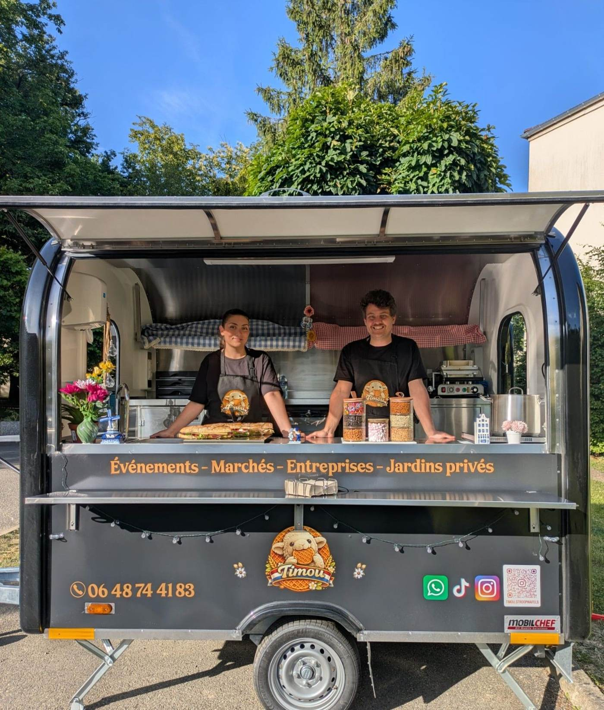
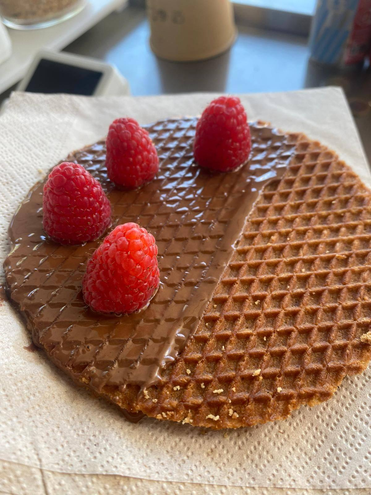
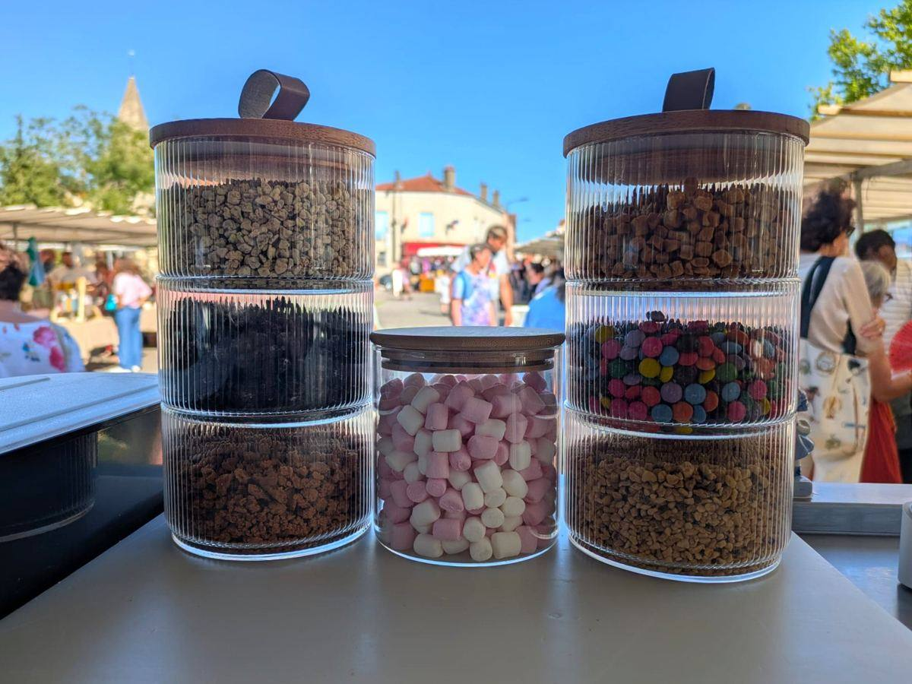
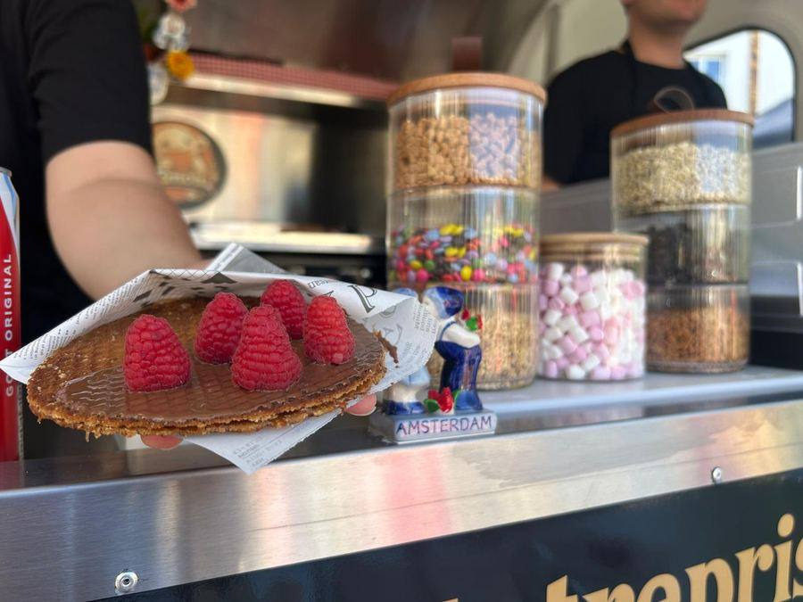
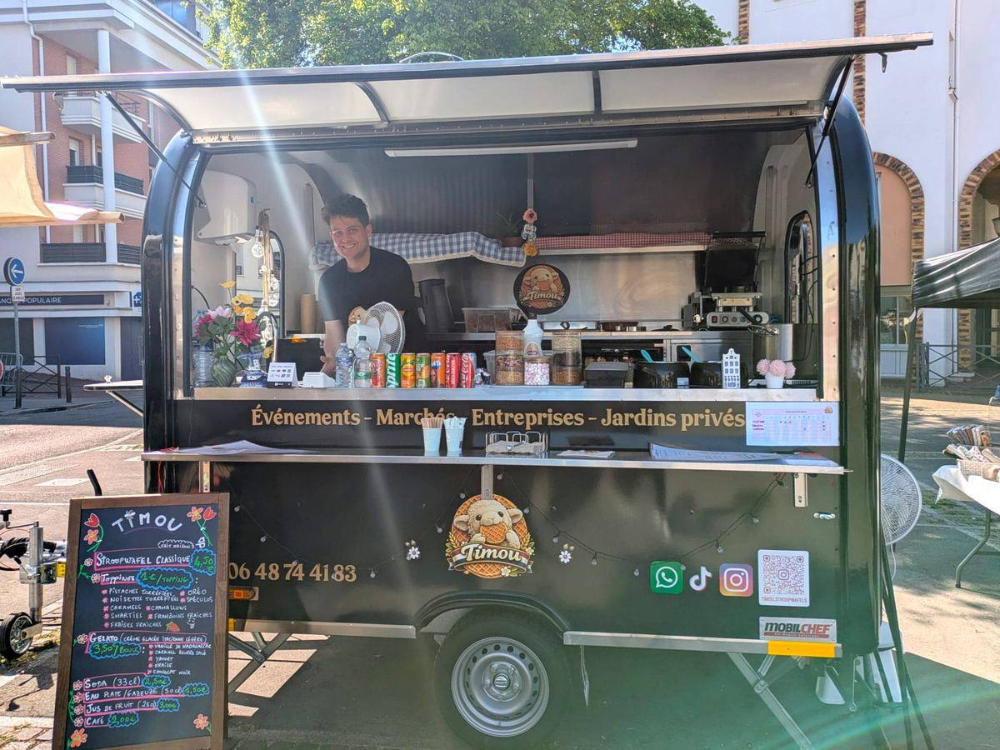
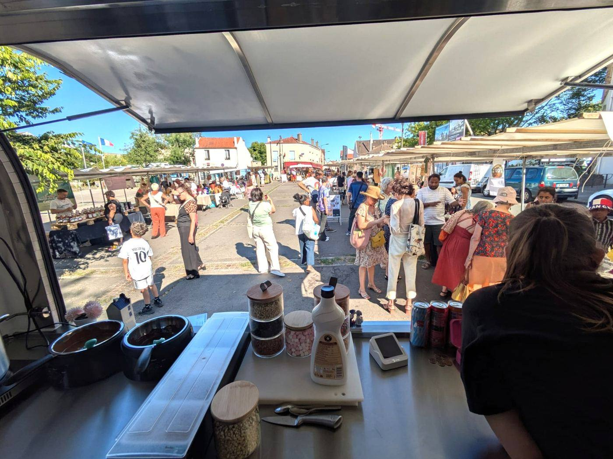
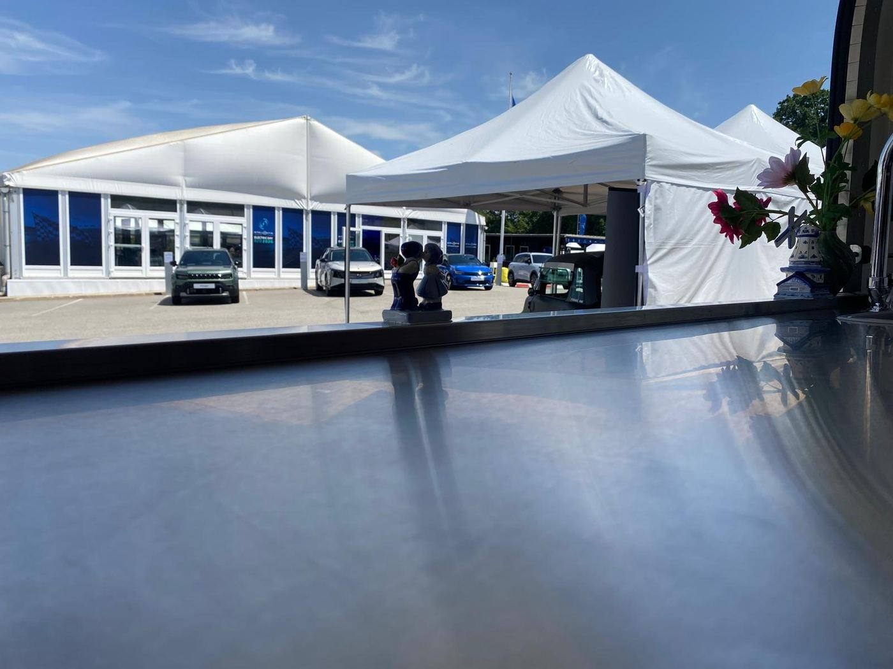
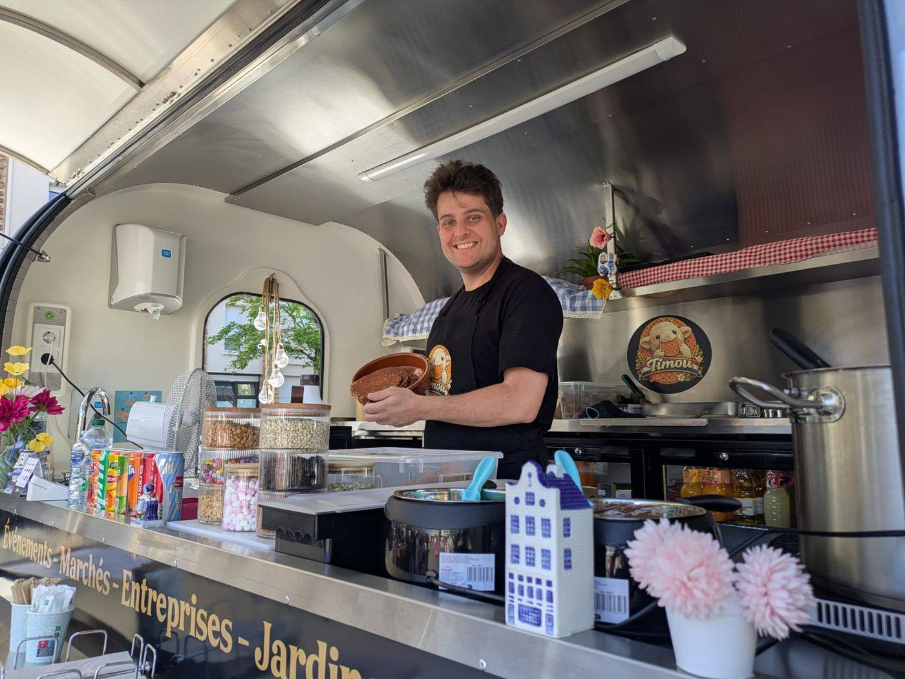
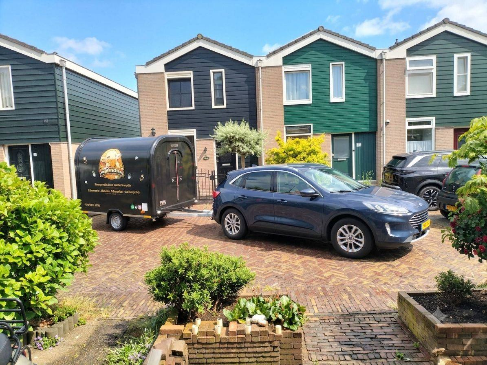
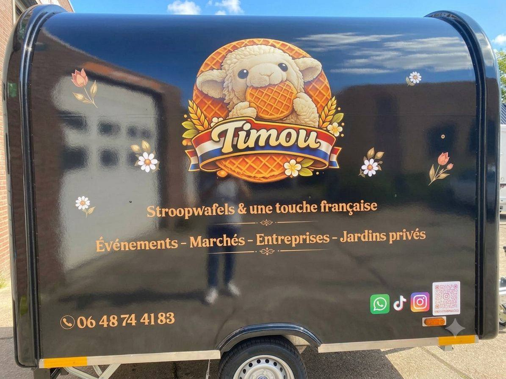

Yvelines · Hauts-de-Seine · Île-de-France
Des stroopwafels hollandaises,
une touche française.
Gaufres au sirop de caramel au beurre chaud, faites maison, artisanalement et à la commande. Sandwichs gourmands et gourmets de produits frais et locaux. Boissons fraîches et chaudes. Servis depuis notre food truck, sur les événements et marchés comme dans vos jardins.
Le concept
La stroopwafel, telle qu'on la fait à Amsterdam — cuite devant vous.
TIMOU est né de la rencontre entre la France et les Pays-Bas. Chaque stroopwafel de 13 cm est pressée et garnie à la commande : caramel coulant, éclats de spéculoos ou de pistaches torréfiées, chamallows, fruits frais. À côté, nos sandwichs gourmands mettent en avant des produits locaux français.
Notre food truck — une remorque artisanale équipée sur mesure — se déplace sur les marchés, chez les entreprises et dans les jardins privés à travers l'Île-de-France.




Où nous trouver
Sur les marchés d'Île-de-France, toute l'année.
TIMOU est présent en itinérance dans les Yvelines (78) et les Hauts-de-Seine (92) : marchés hebdomadaires, places de village, animations commerçantes. Suivez nos réseaux pour connaître nos emplacements de la semaine.
Yvelines
Marché Notre-Dame à Versailles, et prospection continue sur les communes environnantes.
Hauts-de-Seine
Marché des Avelines à Saint-Cloud, marchés d'Issy-les-Moulineaux — Corentin Celton, Épinettes, République, Sainte-Lucie — et alentours.

Événements
Entreprises, mariages, jardins privés : on installe le comptoir chez vous.
TIMOU intervient pour vos événements d'entreprise, séminaires, fêtes privées et réceptions dans un jardin. Formule service + consommation adaptée au nombre d'invités, sur toute l'Île-de-France.
- Entreprises & comités d'entreprise
- Mariages & fêtes privées
- Jardins privés
- Salons & événements de marque



Contact
Une question, une demande de devis ?
Écrivez-nous ou appelez directement — on vous répond vite.
